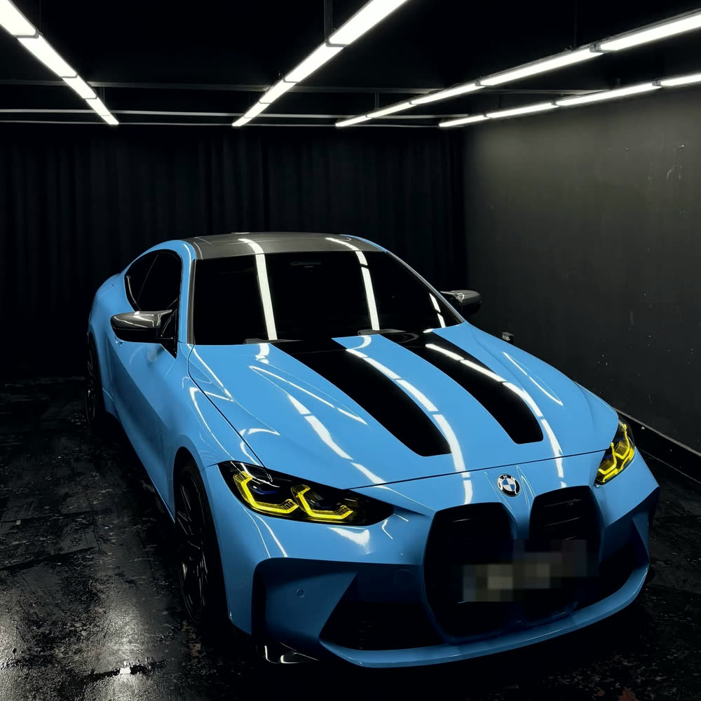
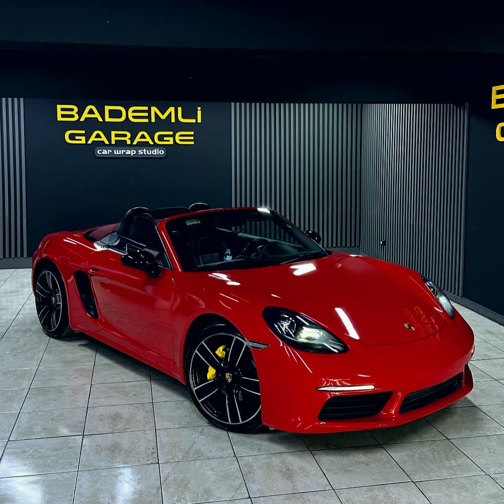
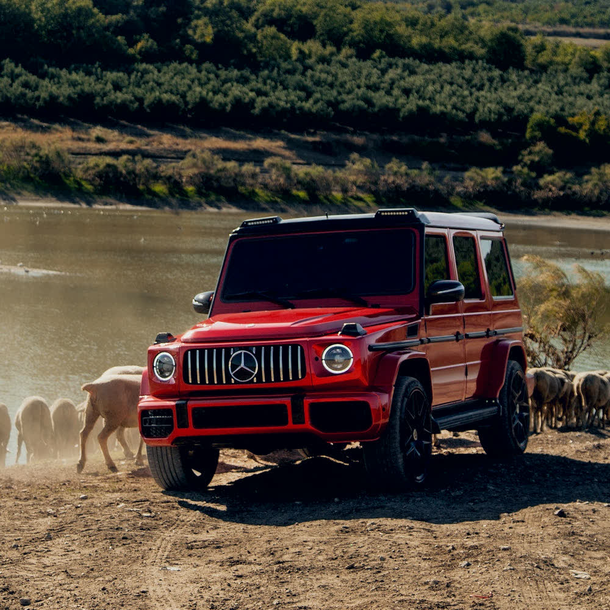
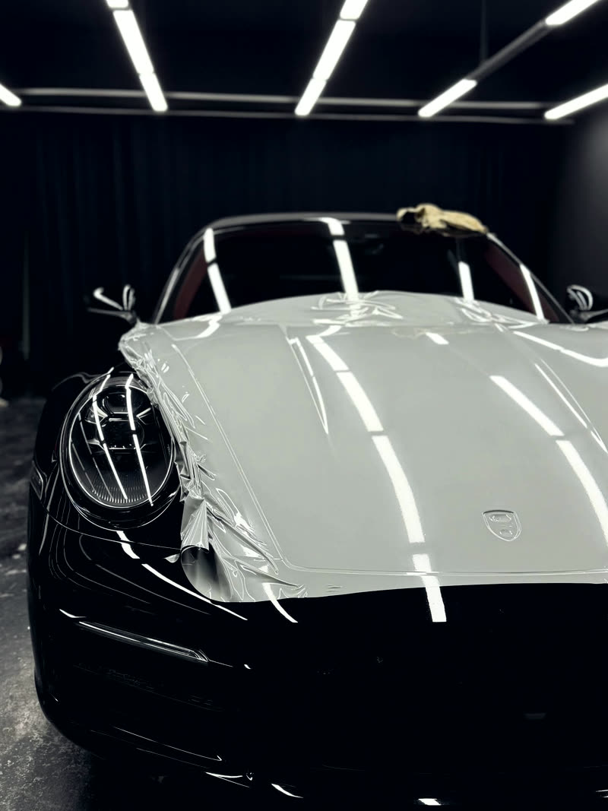
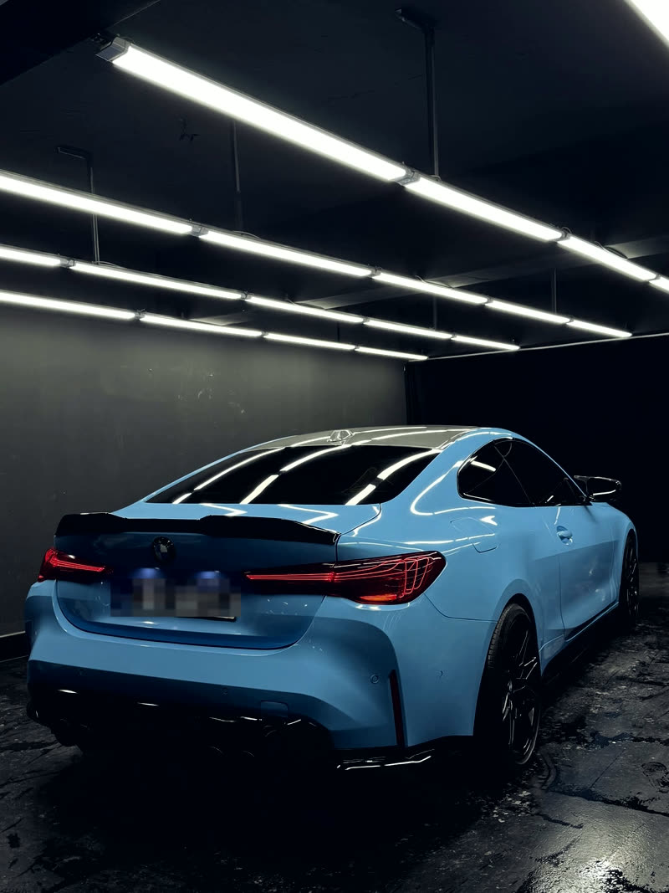

Renk Değişimi
Aracın tamamı ya da seçilen parçalar renk değiştiren filmle kaplanır. Orijinal boya altta kalır, film istendiğinde sökülür.
- Full kaplama
- Parça kaplama
- Tavan / ayna
- Krom silme
Bursa · Mudanya · Bademli
Renk değişimi, şeffaf PPF ve cam filmi. Kontrollü stüdyo ışığı altında, orijinal boyaya dokunmadan — istediğiniz gün sökülebilir şekilde.
Film orijinal boyanın üzerine uygulanır. İstendiğinde sökülür, araç fabrika rengine döner.
Altındaki boya güneşten, taş çarpmasından ve günlük yıpranmadan korunur.
Doğru uygulandığında kaplama sonradan yapılmış gibi durmaz; aracın orijinal yüzeyi gibi okur.
Renk değişimi
Aşağıdaki filmlerin hepsi stüdyoda gerçekten uygulandı. Rengi ve yüzeyi seç — aynı film stüdyo aydınlatması altında nasıl duruyor, gör.
Nardo Gri · parlak yüzey
Hizmetler
Aracın tamamı ya da seçilen parçalar renk değiştiren filmle kaplanır. Orijinal boya altta kalır, film istendiğinde sökülür.
Renksiz boya koruma filmi. Taş çarpması, çizik ve UV'ye karşı orijinal boyayı korur; aracın rengini ve görünümünü değiştirmez.
Isı ve UV kesen cam filmi uygulaması. Kabin içi sıcaklığı düşer, döşeme solmaz, dışarıdan görüş azalır.
Dış görünüm dönüşümü: ön ve arka tampon, far, stop, kaput ve çamurluk değişimiyle aracın modeli yeni kasaya taşınır.
Yapılan işler
Her biri gerçek uygulama — kullanılan film markası ve kodu ile birlikte.

Öncesi bilinmiyor Ice Blue 056G
Soğuk tonların keskinliği, parlak yüzeyin lüksüyle birleşti. Her detayında işçilik, her açıdan premium duruş.

Orijinal siyah Nardo Gri
Orijinal siyah renginden çıkarıp premium segment Oracal Nardo Gri filmle tamamen yeniledik. Siyah kontrastlarla birlikte araç bambaşka bir karakter kazandı.

Orijinal beyaz Gloss Blood Red
Beyaz renkten Hexis Gloss Blood Red rengine kaplandı. Roadster hatlarını derinleştiren koyu, parlak bir kırmızı.

W463 · 2011 W464 · 2023
Kırmızı kaplamanın yanı sıra dış facelift dönüşümü: ön ve arka tampon, far, stop, kaput ve çamurluk değişimiyle 2011 kasa 2023'e taşındı.
Arşivdeki bütün kaplama, PPF ve dönüşüm işleri
Stüdyo
Filmin altında kalan en küçük toz zerresi, yıllarca orada kalır. Bu yüzden uygulama açık alanda değil; siyah duvarlı, LED bar aydınlatmalı kapalı stüdyoda yapılır.


Süreç
WhatsApp'tan araç ve istenen renk konuşulur, ön fiyat verilir.
Stüdyoda fiziksel kartelaya bakılır. Ekranda gördüğünüz ton ile gerçeği ayrışır.
Araç yıkanır, yağ ve kir alınır. Gerekli parçalar sökülür — film kenarları içeri katlanır.
Film ısıyla şekillendirilip yüzeye çekilir. Panel panel ilerlenir.
LED bar ışığı altında yüzey taranır, parçalar takılır, araç teslim edilir.
Müşteri yorumları
Aracıma ultra parlak PPF uygulaması gerçekleştirildi. Malzeme kalitesi oldukça iyi, gönül rahatlığıyla tavsiye edebileceğim bir işletme.
Sıfır TOGG aldım. İnegöl'den arkadaşım Salih'in arabasını görünce çok hoşuma gitti; kapıları açınca kapı içinden PPF kaplama olduğunu anladım. Fazla kalan parçaları içe katlamışlar, yani yıkama sırasında kaplamaya asla zarar…
İstanbul'da bulamadığım cam filmi ve PPF kaplamayı Bursa Bademli Garage'de buldum. Yaptırdığım uygulamadan çok memnun kaldım; kaliteli malzeme, kaliteli işçilik için tek adres.
İletişim
Aracın marka-modelini ve aklındaki rengi yaz — ön fiyat ve süre bilgisini aynı gün verelim.
| Pazartesi — Cuma | 10:00 — 20:00 |
|---|---|
| Cumartesi | 10:30 — 19:00 |
| Pazar | Kapalı |